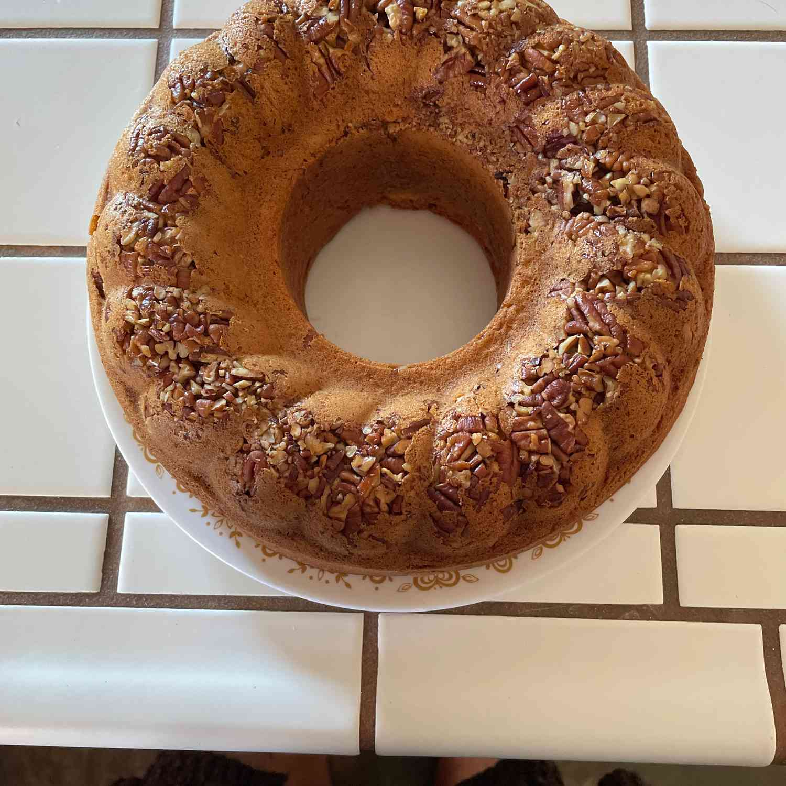

Irish Cream Bundt Cake

This glazed Baileys Irish cream cake is great tasting and excellent for any occasion.
Ingredients:
- Cooking spray with flour
- 1 cup chopped pecans
- 1 (15.25 ounce) package yellow cake mix
- 1 (3.4 ounce) package instant vanilla pudding mix
- 4 large eggs
- ¾ cup Irish cream liqueur
- ½ cup vegetable oil
- ¼ cup water
- 1 cup white sugar
- ½ cup butter
- ¼ cup water
- ¼ cup Irish cream liqueur
Steps:
- Preheat the oven to 325 degrees F
- Grease and flour a 10-inch Bundt pan with cooking spray.
- Sprinkle chopped nuts evenly over the bottom of the pan.
- Combine cake mix and pudding mix in a large bowl.
- Beat in eggs, Irish cream liqueur, oil, and water with an electric mixer on high speed for 5 minutes.
- Pour batter over nuts in the prepared pan.
- Bake in the preheated oven until a toothpick inserted into the center of cake comes out clean, about 1 hour.
- Let cake cool in the pan for 10 minutes.
- While cake is cooling, make glaze: Combine sugar, butter, and water in a small saucepan.
- Bring to a boil and continue boiling for 5 minutes, stirring constantly.
- Remove from heat and stir in Irish cream.
- Invert cake onto a serving dish.
- Prick the top and sides of cake with a toothpick.
- Spoon glaze over the top and brush onto the sides. Allow cake to absorb glaze, then repeat until glaze is used up.